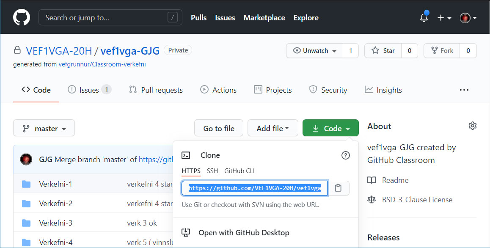

Nemendur geta hlaðið upp verkefnum (upload files) beint í verkefnamöppurnar en það er skynsamlegt að nota þær lausnir sem GIT og Github bjóða upp á.
Til að vinna skipulega í verkefnum þarf að sækja áfangageymsluna af Github. Við tökum klón (clone) spegilmynd af áfangageymslunni yfir á okkar tölvu og vinnum öll verkefnin staðbundið (local). Til þess er best að nota GIT.
- Við speglum áfangageymsluna “Clone Repository” og vinnum með gögnin í geymslunni staðbundið (local)
- Smellið á Code hnappinn og afritið kóðann sem birtist í textareitinum
 - Opnið Git Bash og veljið hentugan stað til að setja áfangamöppuna í tölvunni
$ cd ~/desktop/
Skrifið git clone og límið [Shift]+[insert] HTTPS kóðann inn$ git clone https://github.com/21VA1/21VA1-geymsla.git - Síðan er hægt að fara vinna í verkefnum áfangans. Munið að vista verkefnin reglulega í Git,
$ git add . - Verkefnum er síðan skilað með því að skrá
$ git commit -m 'skilaboð'
og$ git pushí Git bash - Git er innbyggt í Visual Studio Code forritið, þar notum við það í allri verkefnavinnu áfangans.
- Smellið á Code hnappinn og afritið kóðann sem birtist í textareitinum
- Þegar yngri útgáfa skjals er í víðværri (remote) geymslu þá þarf að sækja það með skipuninni
$ git pull - Ef maður er ekki viss hver staðan er þá er tjékkað á stöðunni með
$ git status. -
Það er hægt að skrifa kóða beint í skjöl í Github geymslum, munið að vista skráninguna með “Commit”
- Skjáfyrirlestur á Youtube: Uppsetning “local” áfangageymslu